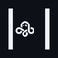

OCTOPUS AGENT BRIDGE
CONNECTING...
Workstation ID:
Simpan
Hub Server URL:
Simpan
Connected Devices:
0 Devices Detected
Scanning USB & ADB devices...
Background Tray Active:
Bridge tetap aktif saat jendela di-close. Akses kembali lewat icon System Tray.
Buka Web Hub
Minimize ke Tray